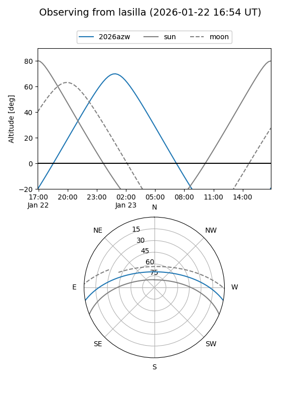
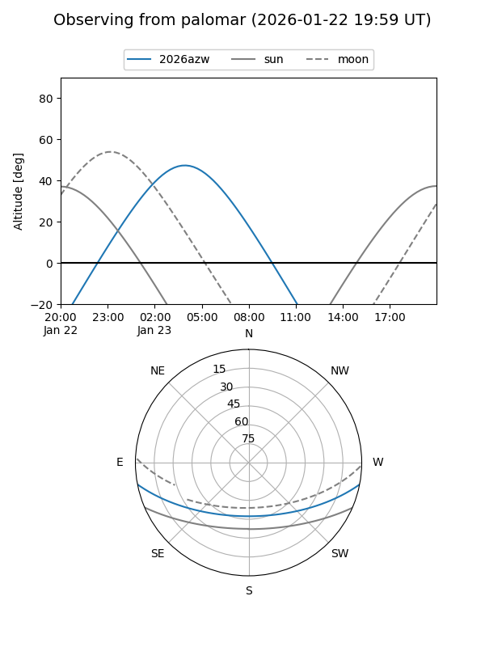
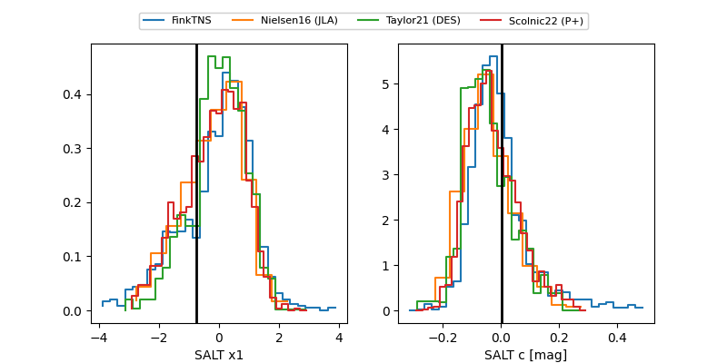

2026azw
Target 2026azw at 2026-01-23 05:06
Aliases and brokers:
FINK: link
Lasair: link
ALeRCE: link
TNS: link
YSE: link
alt names
ZTF26aackvgz (ztf,fink_ztf)
2026azw (tns,yse)
Coordinates:
equatorial (ra, dec) = 64.0878,-9.34440
equatorial (HMS+DMS) = 04:16:21.06,-09:20:39.85
galactic (l, b) = (202.8163,-38.60658)
Flags:
Photometry:
last ztfg=19.91, ztfr=20.02
1 ztfg, 1 ztfr detections
Lightcurve

Visibility


Additional plots
